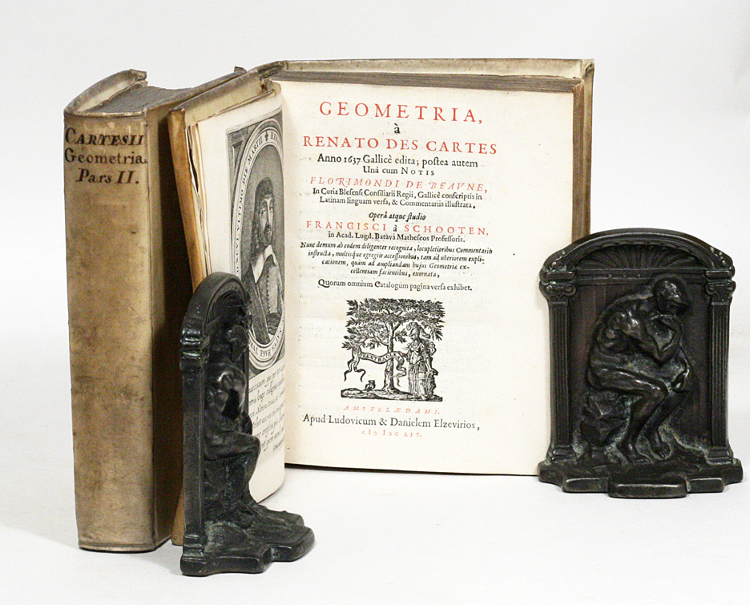

The Mathematical Tripos From Scratch
Table of Contents
Intro
This is for anyone who wants to bring themselves up to date with the last few hundred years of mathematics. Here we teach ourselves the entire Part IA, IB and II of the Cambridge Math Tripos because a surprising amount of it (lectures/notes, example sheets, exams) is available for free online for anyone to self-study. Any books needed use Library Genesis and pick a domain which isn't blacklisted by your DNS provider (or change DNS providers) though many of the books we use are freely available on the author's site.
This is purely for fun my main goal is to see how much of it can be completed using a proof assistant (Lean4, Agda) which we learn in the first course Numbers and Sets.
The absolute state of university costs
Consider this talk on who actually benefits from education looking at ancient societies and their interpretation on what education should be. The average tuition in the US is now minimum USD$12k for public college or $60k for a private college (NYU, Fordham, Columbia) per year and that doesn't include living costs which every state university I looked at estimated you'd pay $30k per year or $120k total. The story is the same in the commonwealth too. Nobody can afford to go anymore or is refusing to go as costs of living and tuition are too high. Cambridge is somehow still reasonably priced for being an elite school if you're a local it is about same as tuition costs at a public school in US but the tripos is only 3 years so you have save $30k in debt. Looks like we'll have to just teach ourselves.
Isaac Newton at Cambridge
For geometry-themed entertainment try Isaac Newton on Mathematical Certainty and Method by Niccolo Guicciardini.
Isaac Newton entered Cambridge Trinity College in 1661 for it seems a medical degree as a sub-sizar meaning subsidized tuition in exchange for being a domestic servant on campus waiting tables and working in the kitchen, whatever labor that was needed. Cambridge then was just a diploma mill there were seldom any lectures, the oral exams at the end of your degree basically optional, and fellows (graduate students) took jobs as tutors to supplement their income when they weren't getting drunk in nearby taverns. Undergrad degrees consisted of one of these tutors giving you a list of books to read. According to his Trinity College notebook which Cambridge still has this curriculum was a large reading list of classics such as Du Val's four volume collected works of Aristotle like Organon and Metaphysics, Porphyry's Isagoge, Vossius's Rhetoric, Diogenes Laertius, Epicurus, Plato, and many Roman poets like Ovid. This was because of the recovery of Aristotle in the middle ages which shaped 'philosophy of natural sciences' courses for the next few centuries. There didn't exist titles like mathematician, practitioners then considered themselves philosophers. Newton soon stopped taking notes of his official curriculum and must have read Walter Charleton’s Physiologia because he wrote down 37 headings on different pages that were questions to be answered investigating natural science topics, 18 of which came from Charleton's book and some from Aristotle. These were 'Of Atoms, Of a Vacuum, Of Vision' and many others. He gave each topic different sized gaps indicating how much he thought he needed to write about each. Everytime he would learn something about them he'd write notes under the heading like a comet position he once tracked.
According to Newton's notebook and the writings of his close friend De Moivre here is how Newton learned mathematics. Wandering the town fair in 1663 he comes across a book on astrology and out of curiosity of the occult buys a copy. There's a figure he couldn't understand in the book because he didn't know trigonometry. He buys a book on trigonometry but couldn't understand the demonstrations because of a lack of geometry. At Cambridge he goes to the math department and everyone there is deeply immersed in the work of La Geometrie by Descartes. They tell him to buy Barrow's Euclid Elementorum an 'easier' or explained version of Euclid's Elements. He skims it and after finding what he needs for the astrology/trig book abandons the book as 'too trivial demonstrations' (later has to go back and relearn classic geometry).
He returns to the math department and is given Oughtred's Clavis mathematicae or the key to mathematics writing he understands it except for the solutions of quadratic and cubic equations however his takeaway in his notes is that algebra can be used for exploration, which he starts doing by writing out hundreds of examples.

Figure 1: Cartesian Geometry by Van Schooten rarebooks
Again he returns to the math department to ask for a new book, and they are all still immersed in Cartesian geometry so Newton, despite being told it was a very difficult book, borrows a 1659 two volume Latin translation of Descartes La Geometrie by van Schooten called Geometria, a Renato des Cartes with appendices and commentary by his students. This book was considered the state of the art of 17th century analytical geometry, it would be like reading a graduate text today by a leading expert that had an appendix full of lecture notes and PhD student dissertations.
This is the algorithm Newton used to read van Schooten's two volume book. He read a few pages or so, couldn't understand the text, and went back to the beginning. Went a little further then stopped again going back to the beginning. He repeats this loop by himself until he finally 'makes himself whole of Descartes'. Looking at the online copy of this 1659 version the Descartes geometry is about 104 pages and 450 or so pages of additional research/commentary. It is broken up into 3 parts and assuming he didn't have to reread each part everytime he looped, only the relevant part (~34 pages), it probably took him 3 months to finish van Schooten which is what his notebook shows that after a few months he was already doing research in analytical geometry trying to generalize Descartes. His notebook indicates he learned from the grad student commentaries how to transform a hard problem into a different simpler one. Somewhere around this time he moves dorms complaining his peers were too busy partying so lives with more serious students.
Newton's notes which you can read online show him trying to generalize any math he read which often would lead him into algebraic corners where he would get stuck as there didn't exist at the time methods to solve/simplify. He seemed to assume everything he read was a special case of something more general such as the insight that integration is the reverse operation of differentiation so there must only be a theory of derivatives somewhere waiting to be discovered.
After Descartes he returned the borrowed copy and bought a different copy of Descartes for himself, and van Schooten's Exercitationes mathematicae libri quinque or Five Books of Mathematical Exercises to help him fill in the blanks of his algebra misunderstandings as he had a lot of mistakes in his notebooks regarding negative roots. Newton assumed the cubic parabola was the same shape in all quadrants but soon after corrected these mistakes. Descartes geometry wasn't like today's Cartesian plane it originally consisted of just one positive quadrant but van Schooten and his students had expanded it.
Descartes' La Geometrie is filled with little comments of encouragement as he was afraid nobody would read his work if it was too long so everywhere there is these reassurences like 'don't worry reader the following isn't too hard' or insisting the reader figure out a problem themselves to not deny them of the satisfaction he found figuring it out himself. The different copy Newton buys has all these comments left in tact and Newton misunderstands, or the translation is incorrect, one of these comments by Descartes about the equation of curves stating 'it is easy' to find everything you want to know about a curve from it's equation and the reader need not be bothered by a lengthy demonstration when in fact this is an unsolved problem. Newton can't figure out this supposedly simple exercise in Descartes' book so breaks down the equation of a curve into many headings in his notebook and tries to generalize which led to him creating his own advanced analysis well beyond any other mathematician at the time.
Around the same time when he was trying to figure out that Descartes exercise he reads Arithmetica Infinitorum by Wallis which is the arithmetic of infintesimals. Newton recognizes many of the sums are similar to what he read in Oughtred's book, known today as Pascal's triangle and in typical fashion seeks to generalize and invents the binomial theorem. Newton then reads Viete's Opera Mathematica which was another textbook by van Schooten compiling all the work of Viete such as Diophantine equations. In less than a full year Newton managed to bring himself up to date with the entire achievement of mid 17th century mathematics by himself and begins self-directed research writing out 22 headlines of 'problems' in his notebook and classifying them into groups regarding integration, analytic geometry and mechanics.
In April 1664 Newton has been a subsizar for three years and has to apply for a new scholarship at Trinity College where he first meets the Lucasian Professor Isaac Barrow who examines him on Euclid and finds he knows nothing about geometry. However Barrow had also worked on infinitesimals and apparently had invented some of calculus himself but not noticed if you read the book The Geometrical Lectures of Isaac Barrow. The author found in Barrow's notes he definitely had a kind of proto-calculus worked out but didn't seem to notice or care about it's analytical importance enough to write a treatise about it. Through these conversations no doubt Barrow recognized the potential of Newton and unlike modern day academia where he would have tried to squash Newton and sabotage his work he becomes Newton's mentor and starts giving him work to do like helping to publish Barrow's books and giving Newton all his research on infinitesimals. Barrow also helps Newton obtain his scholarship in exchange for the agreement Newton attend his lectures on geometry and learn the importance of Euclid.
The plague shuts down the school from the summer of 1665 to spring of 1667 and Newton returns home, makes himself an office by building bookshelves for his now large library and spends all his time doing research with his new analytical tools building them into modern calculus. Describing his activities during the second plague year: "I am ashamed to tell to how many places I carried these computations, having no other business at the time, for then I took really too much delight in these inventions". There is notes he kept of calculating a logarithm to it's 52nd decimal point. This is basically the end of story for Newton's analysis research, sometime during the pandemic years he is satisfied with his calculus and abandons research in math to pursue his other questions in his notebook. There is a lot of notes about how tedious it was to do calculations before he came up with his analysis so we can assume he became satisfied that he had all he needed.
Newton believed the ancients had already figured everything out, and this information was lost over time after disasters had destroyed the information. He based this from his own experience living during the plague, the great fire of London and political upheaval. This led him to alchemy where he believed their knowledge was encoded in myths written in Roman and Greek literature where every myth was real but that their lives were embellished through story telling. A common alchemist practice for example was to interpret Ovid's Metamorphoses where the god of the forge/metalwork Vulcan catches his wife Venus and Mars locked in an embrace so traps them in a fine metallic net. The alchemists of the Royal Society that Newton belonged to frequently used the names of planets for metals so obtaining an alchemists manuscript by George Starkey he recreated this myth and ended up with an alloy with a strided net like surface. Newton also decoded Cadmus and the founding of Thebes from Ovid into practical lab instructions.
20 years later Newton has produced numerous manuscripts but refuses to release any of them until he is offered to write the Principia, and wanting to prove infintesimal calculus he tries uncovering the ancient analysis used in classical geometry. Pappus' book 7 contains a commentary about the tools and propositions that Euclid, Apollonius, Eratosthenes and other geometers of the day used that Pappus referred to as the 'treasury of analysis'. These were said to be contained in books by Euclid but those were never recovered. These lost Porisms (corollaries) are speculated by Newton to be projective geometry.
Newton in his Lucasian chair lectures said that the ancients would never bother to introduce the algebra of curves with geometry because you lose the simplicity of working within geometry as its whole point was to escape the tediousness of calculations by simply drawing lines and circles. He also claims books like Pappus's Collectio deliberately hid the analysis, as it was considered an inelegant tool and that ancient synthesis where they deduced a consequence from a given premise (a corollary) using geometric demonstrations was a superior method as the analysis could not be reversed in steps like geometric synthesis could. He went further and claimed if you wanted to discover seemingly unrelated corollaries you had to use synthesis, describing the analysis of his day as a 'tedious pile of probabilities used by bunglers'. In other words if he didn't rely on geometry he could not have found most of the critical results of the Principia. People today claim he did this to avoid priority disputes over his analysis he kept hidden except for privately circulated manuscripts, but he used geometry to invent limits and plane transformations that were not formally developed until 200 years later so he was probably right. His limits are very similar to what everyone today is using in modern calculus courses. If you take a calculus course today they will tell you Newton's influence to promote geometry allowed continental mathematicians to freely develop analysis which kept back Britain decades in the field of analysis.
He later wrote in a manuscript on geometry that mechanics of motion was what generated all geometry and that the ancients had understood this as well conceiving geometrical objects as generated by moving along a straight edge, circles/elipses via the movement of a compass, or via translation like in Proposition 4 of Book 1 of Euclid's Elements where one triangle form is moved to compare to another. This is where he demonstrated that rotation of rulers were in fact transformation of the plane. Here is how Newton used his rotating ruler to create a power series.
"Comparing today the texts of Newton with the comments of his successors, it is striking how Newton’s original presentation is more modern, more understandable and richer in ideas than the translation due to commentators of his geometrical ideas into the formal language of the calculus of Leibnitz" -Vladimir Arnold 1990
Newton's completely different life then began at age 52 when he left Cambridge and went on to become both the warden and master of the London mint for 30 years a highly lucrative job with enormous bonuses. He cracked down on mint corruption and absenteeism by personally overseeing the wagies and making them perform tedious tests on batches while producing highly pure coinage due to his dabbling in alchemy. Newton had a Professor Moriarty tier nemesis. Due to his new standing in London elite circles he's made president of the Royal Society and was hilariously ruthless ruling it with an iron fist vanquishing all his previous critics. His niece came to live with him in London and was some kind of famous socialite of the time holding many parties at his house where he'd entertain guests with his expensive cider that he had made buying apple trees from Ralph Austen of Oxford a renowned cider maker. Newton was famous for wit and performing dramatic demonstrations which Princess Caroline enjoyed so much he was a regular feature of her court. He was not the miserable loner that modern day biographers wish to portray him as. His letters show regular payments and gifts to all extended family members too so he wasn't a scrooge and he didn't die broke either from an investment scam. His estate was worth £30,000 when he died and to see how much that is worth today the average salary of a Surveyor then was about £131 so he could have employed 229 Surveyors for a single year. Today an average salary for a London Surveyor is £54,826 per year and employing 229 for a year is upper bound £13 million that was roughly his purchasing power in the 1720s a massive amount of money then.
According to a Cambridge historian who wrote Life after Gravity Newton gave as a dowry to his niece and her future daughter a 200 acre estate which he later moved into when he was dying. He had an elaborate sun dial built in the gardens:
A very curious relic of Sir Isaac survives in the garden at Cranbury Park, viz. a sun-dial, said to have been calculated by Newton. It is in bronze, in excellent preservation, and the gnomon so perforated as to form the cypher I. C. seen either way. The dial is divided into nine circles, the outermost divided into minutes, next, the hours, then a circle marked "Watch slow, Watch fast," another with the names of places shown when the hour coincides with our noonday, such as Samarcand and Aleppo, etc., all round the world. Nearer the centre are degrees, then the months divided into days. There is a circle marked with the points and divisions of the compass, and within, a diagram of the compass, the points alternately plain and embossed.
Basic Arithmetic
We only need the absolute basics to begin and can fill in what we need as we go.
Arithmetic with natural numbers
- YouTube - Arithmetic and Geometry Math Foundations 2
The successor function s(n) = n + 1 for natural numbers:
- s(0) = 1
- s(s(0)) = 2
- s(s(s(0))) = 3
Let's prove the laws of multiplication using his definitions
Prove n * 1 = n
The definition of multiplication: mn is n + n repeated m times so n1 is 1 + 1 repeated n times so 11 + 12 + … + 1n = n
We will need this result for the other proofs.
Prove the distributive law: (k + n)m = km + nm
km is m + m repeated k times or m1 + … + mk and (k + n)m means m + m repeated (k + n) times. Distributing m in (k + n)m we get: ((m1 + m +…mk) + (m1 + m +…mn)) and now the left side matches the right side since km + nm is the same when expanded.
Prove the associative law: (kn)m = k(nm)
(kn)m is m + m repeated kn times and kn is n + n repeated k times:
(n1 + … + nk)m or (mn1 + … + mnk) using distributive law.
Right hand side: k(nm) is nm + nm repeated k times (nm1 + … + nmk) and factor out m, both sides of the equation are the same since we haven't proven the commutative law yet so can't claim nm sequence is the same as mn sequence.
Prove the commutative law: nm = mn
First let's prove n1 = 1n or 1n = n. We proved n1 = n already, so we can use substitution to replace n in 1n with 1(11 + .. + 1n) and using the distributive law this is (11 + .. + 1n) or n. Now we have n1 = 1n.
Looking at the right side: mn is (n1 + … + nm)
Factor out n: n(11 + .. + 1m) and a sum of 1's up to m is m, we have nm = nm.
Subtraction and division
- YouTube - Arithmetic and Geometry Math Foundations 4
Prove the subtraction laws
- n - (m + k) = (n - m) - k
- The left side is n + (-1)(m + k)
- (-1)(m + k) via distributive law is (-1)m + (-1)k
- (-1)m is m + m groups at -1 times which makes no sense so we can commute
- m(-1) now it's m copies of -1
- n + (-11 + -12 .. + -1m) is -1 added up m times or -m
- n - m + (-11 + -12 .. + -1k) is -1 added up k times or -k
- n - m - k = n - m - k proved
Oops, he didn't define negative numbers yet (or even zero) since n - m is only defined if n > m (we are still in the natural numbers only) so we can't just move variables to the other side either. Can you prove this another way?
The Hindu-Arabic number system
- YouTube - Arithmetic and Geometry Math Foundations 6
A simplified Roman numeral system is introduced
- Uses powers of 10
- 327 = 3 x 102 + 2 x 101 + 7 x 100
Arithmetic with Hindu-Arabic notation
- YouTube - Arithmetic and Geometry Math Foundations 7
A new way of hand multiplication is shown, taking advantage of the fact the notation is using the distributive law. "Borrowing" while doing hand subtraction now makes sense. Wildberger rants how his daughter was taught a ridiculous way and this is now true everywhere.
Laws of Division
- YouTube - Arithmetic and Geometry Math Foundations 8
In every calculus course like the recorded lectures for MIT's 18.01 the prof repeatedly uses these laws without explaining them manipulating equations on the board.
Wildberger is ranting here about long division because schools removed it claiming it was 'too difficult'. I learned it by exploiting the Hindu-Arabic encoding:
7)203
How many groups of 7 x 102 fit into 203? 0 so reduce to how many groups of 7 x 101 fit into 203? 20
20 7)203 -140 63
How many groups of 7 x 101 fit into 63? 0 so reduce to how many groups of 7 x 100 fit into 63? 9
29 7)203 -140 63 -63
Fractions
- YouTube - Arithmetic and Geometry Math Foundations 9
Interesting how he defines all these as types.
Arithmetic with fractions
Laws of arithmetic for fracions
- YouTube - Arithmetic and Geometry Math Foundations 11
More proofs to follow.
Integer construction
- YouTube - Arithmetic and Geometry Math Foundations 12
The point in watching these is to see how you can start with just the natural natural numbers and keep going defining more and more complexity with new types of numbers like integers.
Rational numbers
- YouTube - Arithmetic and Geometry Math Foundations 13
We learn what a field is. If you're curious in the introduction here he shows how the rational number line has been raised on the y-axis showing how all numbers on a line through the origin (0,0) are equal on the rational strip. It explains why a/1 is a and why a/0 is not defined.
More Arithmetic (Optional)
If for whatever reasons you want even more arithmetic try Arithmetic by Herb Gross. This is vocational school style math that was originally taught to adults at community colleges and in prisons in North Carolina. The book is here archived. The YouTube playlist has exercise explanation videos you don't have to watch unless needed but they're very good he teaches everything using bounds and inequalities or relating them to English grammar.
Basic Geometry
We will take MATH 373 in part IB of the Tripos there's a playlist on YouTube. We'll learn Euclidean, Projective and Hyperbolic geometry.
Euclid's Elements
- YouTube - Arithmetic and Geometry Math Foundations 19
- YouTube - Arithmetic and Geometry Math Foundations 20
- YouTube - Arithmetic and Geometry Math Foundations 21
All modern geometry and algebra is derived from Euclid's book. Wildberger breaks down the essential aspects here as this used to be taught in middle schools and students had to demonstrate proofs from the book on the board to the class which is how computer scientist Robert Harper said (at an OPLSS lecture) this is how he first learned mathematical logic or proofs. US President Lincoln also read Euclid claiming he was embarassed by not having any formal education:
"He studied and nearly mastered the Six-books of Euclid (geometry) since he was a member of Congress. He began a course of rigid mental discipline with the intent to improve his faculties, especially his powers of logic and language. Hence his fondness for Euclid, which he carried with him on the circuit till he could demonstrate with ease all the propositions in the six books; often studying far into the night, with a candle near his pillow, while his fellow-lawyers, half a dozen in a room, filled the air with interminable snoring."- Abraham Lincoln from Short Autobiography of 1860
Basic Algebra
Algebra as we know it today was invented 1200 years ago as a 'system of balancing' to figure out complex Islamic inheritance law and being able to add scalars to both sides of an equation to remove negative numbers since they had to concept of integers back then. Before that Diophantus wrote several treatises on arithmetic which was really proto-algebra and again invented to solve Athens legal procedures about dividing of estates between family members. The most interesting aspect of Diophantus' work is that it's quite modern how it teaches you how to do math by solving problems giving examples of potential mistakes and dead ends. If you're interested read Brill's Companion to the Reception of Ancient Rhetoric chapter 26 The Rhetoric of Math on library genesis.
- YouTube - Arithmetic and Geometry Math Foundations 47
- YouTube - Arithmetic and Geometry Math Foundations 48a
- YouTube - Arithmetic and Geometry Math Foundations 48b
- 3 vids are the absolute basics of algebra and solving a quadratic equation
- YouTube - Arithmetic and Geometry Math Foundations 54
- YouTube - Arithmetic and Geometry Math Foundations 55
- Binomial theorem/coefficients (n choose k)
If you want a very from scratch course try Herb Gross The Game of Algebra lectures here or try the Art of Problem Solving books on Algebra however we will be doing a lot of abstract algebra and proving all of it so we're going to pick it up eventually.
Mathematical Tripos
How it works
The Tripos consists of Part IA, IB and II and is supposed to take 3 years to achieve a BA honors degree. Part III is a one year masters degree similar to a first year PhD student taking 5-7 grad courses. It is a fully immersive degree where all you do is math 6 days a week there is no other electives. Each year has 3 terms that are 80 days long: Michaelmas, Lent and Easter. Each term is 4 courses of 24 lectures each except Easter where computational projects are done and the exams that are 3 hours long each with each exam testing 2 courses. This is why it's considered a very hard degree because imagine taking 8 courses and having to know them so well that you can pass a 3 hour test many months later.
During the term you work through 4 example sheets per course which is how we'll know that we are keeping on track. These are usually due every 6 lectures and attending lectures is optional some just read the notes and work through the recommended books. Each course has around 4-6 recommended books usually the first 2 represent the first half, the others the second half. There's no TAs, no recitations, no midterms, no office hours, the only time you get personalized instruction is during supervision where your example sheet is reviewed and you can ask questions. Math stackexchange if needed can help us here.
Curriculum
Here is the schedule for 2023/2024s. Every year the tripos publishes their curriculum and sometimes professors post lecture notes on their personal sites or by students like here or Neel Nanda's intuitive notes.
Here is a sample recorded lecture.
Part IA (first year)
Part IA is mandatory there's no options. Cambridge allows students to sit in on any lectures they want so often students attend 1B Groups/Rings lectures to fill in the theory.
- Michaelmas
- Vectors/Matrices
- Differential Eq
- Groups
- Usually 8 extra lectures of 1B Groups
- Numbers and Sets
- Mechanics refresher (no exam)
- Lent
- Analysis
- Probability
- Vector Calculus
- Dynamics
- Easter
- Variational Principles (examined next term)
- Computational Projects here
- Exams for all courses taken in Michaelmas and Lent
Part IB (second year)
This is another sample term. We get a choice to pick whatever we want so long as we don't break dependencies for Part II see the schedule.
- Michaelmas
- Linear Algebra
- Analysis and Topology
- Methods
- Quantum Mechanics
- Markov Chains
- Lent
- Groups, Ring, Modules
- Geometry
- Complex Analysis
- Statistics
- Electromagnetism
- Fluid Dynamics
- Easter
- Optimisation
- Computational Projects
- Exams for all courses taken in Michaelmas and Lent
Part II (third year)
Choose ~8 courses you're interested in.
We can try Classical Mechanics and Differential Geometry to do Sussman's two books Structure and Interpretation of Classical Mechanics and Functional Differential Geometry which is some more computational projects. His book uses the material we learned in Variational Principles. Whatever you will need for part III you take here.
Part III (Masters)
List of courses here and we have access to the example sheets for most topics. You get 9 months of instruction taking 5-7 graduate courses and are examined in Easter term. Only 5 courses are examined and you only attempt 3 questions. They allow you to write an essay ~30 pages like a thesis to replace having to do a 3 hour exam on that course. This is similar to first year grad school for PhDs in North America except there is usually an oral exam with multiple examiners to see where you currently stand.
If you wanted to try Part III the entire Algebraic Geometry and commutative algebra lecture content is here. It has applications in cryptography with error correcting codes, complexity theory, anywhere there exists a polynomial space. Some of the other subjects have equivalent resources but we're a long, long way from part III we'll just see what's available when we get there.
Part 1A Michaelmas
According to the schedule for term 1 (Michaelmas) there is 4 mandatory courses of 24 lectures and if we don't have 'A-levels mechanics' we are supposed to take a crash course in classical mechanics too but they end up reteaching it anyway. In real life you would get 80 days to do this completing the 4 example sheets per course but wouldn't be examined on the material until June next year so have 9 months to prepare. The computational projects are all done in May/June as well.
Study skills
Ok! It's October and we have arrived on campus and are given this leaflet on study skills in mathematics. In this post Welcome to the Cambridge Mathematical Tripos he gives the same advice Don Knuth and Terence Tao give which is math is hard work nobody can coast at this level and try to prove it all yourself as you read. He tells us whenever we come across a Lemma in a book guess what it will be used for then try and prove it. Richard Borcherds in the beginning of this video shows how he does math. He writes down examples of what objects and functions a theory would need to include and abstracts out their common properties in order to find the axioms.
Numbers and Sets
Looking at the schedule description and notes this is completely covered by the free book An Infinite Descent into Pure Mathematics which Carnegie Mellon university uses for their 'intro to proofs' style course. The example sheets and exams are no problem.
Additionally there is The Mechanics of Proof and the author is a Part III Tripos grad. This uses the Lean proof assistant so we can use Lean in future math courses. I go through it here. YouTube is has many workshops on how to use Lean as a proof assistant in Algebraic Geometry, Complex Number Analysis, Abstract Algebra etc.
The workshop for this course is -—> Numbers and Sets
Modern Calculus
Since we aren't taking mechanics we have a free block here to learn calculus.
- The Calculus Integral by Brian S Thomson (pdf here).
- A Radical Approach to Real Analysis by David Bressoud
The Bressoud book is recommended by Cambridge and the best undergrad analysis book you will ever find. The Thomson book teaches modern integration theory. We're likely to never do integrals and derivatives by hand (except for exams of course) that is all done by software now, even though the title of Grand Integrator is pretty awesome, so it makes much more sense to get good at the theory and build a background to learn measure theory but we'll learn everything about Riemann sums anyway and will have no problem doing the example sheets or exams for Analysis I next term with the above resources.
The workshop for this course is -—> Modern Calculus
Groups
The point of studying groups is to learn a math framework for analyzing symmetry in complex structures like time series analysis. Books marked with † in the schedule are particularly well suited to the course and here that book is Algebra and Geometry by Alan F. Beardon which is on library genesis.
Additionally we have access to Modern Algebra which uses the text Visual Group Theory that is recommended by the schedule. A work book we can use which fills in some of the rigor left out by the VGT book is here and called An Inquiry-Based Approach to Abstract Algebra by Dana Ernst.
We have access to the first Cambridge lecture on Groups and the official lecture notes here from IA Groups (2019). Someone made complete lectures on YouTube based on the course notes too.
TODO
Vectors and Matrices
The recommended book that covers most topics is Algebra and Geometry by Alan Beardon which we're already reading for Groups. Additionally Wildberger has a playlist of 'geometric algebra' covering the same topics as the course notes including the complex numbers and relativity content. Official notes are here and the course hasn't changed that much or choose any of these notes, years ago Groups, Vectors and Matrices, was one single course called Algebra and Geometry Part I and II with 48 lectures.
It would make sense here to take Axler's new 2024 version of Linear Algebra Done Right which is designed for Functional Analysis students (that's us) since Cambridge is recommending 6 books anyway this course and we have 8 months to finish.
TODO
Differential Equations
Right now there is all kinds of physics-informed machine learning going on to numerically solve ODEs. We also will learn epidemic models and other dynamic systems should you want to work in quantitative finance or a research programmer in a medical lab.
Course notes are here and similar to this full course that contains some of the Boyce book and also has boundary value problems and matches better with 1B content we'll be doing later. There is a problem bank with solutions too. If we can do the sample sheets then we're good. We could also take the SciML book which teaches how to optimize ODEs and solve them, plus uses the Julia language which we will need to learn for the computational projects in Easter anyway.
Part 1A Lent
Not even close to here yet TODO
Analysis I
We already know undergrad analysis and will have been exposed to measure from The Calculus Integral so instead we'll take Axler's free book Real Analysis. This book introduces Functional Analysis and Probability both critical topics if you're interested quantum mechanics and mathematical finance. It will also at the same time complete many courses in Part 1B and II for us as a single resource. Bressoud wrote a sequal to his radical real analysis book called A Radical Approach to Lebesgue's Theory of Integration which we can look through while doing Axler's book.
Vector Calculus
In addition to books/notes Cambridge uses we can take Sussman's book Functional Differential Geometry covering all the required theorems like Stoke's and Tensors and make them into programs using scheme. It simplifies all these concepts when you can see it as a running program you built from scratch.
Probability
Axler's book already teaches us some probability w/measure and The Grimmett & Stirzaker book 4th ed recommended by Cambridge is like the bible of uncertainty modeling it covers everything plus has an accompanying work book One Thousand Exercises in Probability.
One of the most interesting courses you will ever take is imprecise probabilities and their 2019 book Game-Theoretic Foundations for Probability and Finance it covers betting, decision making, uncertainty. It uses game theory as a foundation for probability instead of pure measure theory.
Dynamics and Relativity
On Prof David Tong's page and mechanics we don't know are all over YouTube and classic books.
Part 1A Easter
Variational Principles
Very good lecture notes and this is what Sussman uses for his book SICM which we'll do once we get to Part 1B and take classical mechanics. This material is examined the next year in Part IB.